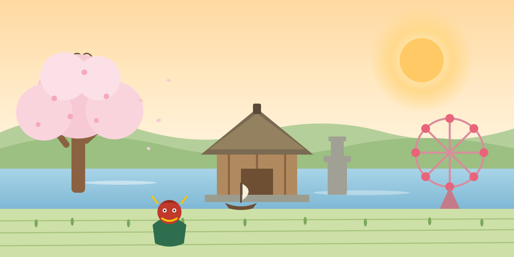

印西市の指定文化財50か所に近づく（80m以内）とパズルのピースが1枚ずつ開きます。50枚すべて集めると絵が完成！「▶行く」で文化財の近くまで飛べます（最後は自分で近づこう）。
ここは、印西市の街並みをGoogleの3D都市データでリアルに再現したバーチャル空間です。空を飛んだり、地上を歩いたりしながら、本物そっくりの印西の街を自由に探検できます。
パソコン：
スマートフォン：
右側のパネル（スマホは「📍スポット」ボタン）から駅やモールへひとっ飛びもできます。
印西市の指定・登録文化財50か所がワールド内に隠れています。
集めた記録はこの端末のブラウザに保存されるので、途中でやめても続きから遊べます。
※移動した直後は街並みの読み込みに数秒〜数十秒かかることがあります（「🌍読み込み中…」表示が消えるまでお待ちください）。駅前から離れた郊外では映像が粗い場所もありますが、ピース獲得には影響ありません。
印西市の指定文化財50か所をすべて巡り、絵が完成しました！
おめでとうございます！
この画面のスクリーンショットがイベント参加の証明になります。
Google Photorealistic 3D Tiles から印西市の街並みデータを取得しています。
通信環境により数十秒かかることがあります。